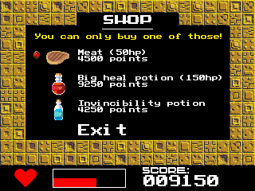

PROTO X is a brand new arena fighting game for your TI-84 Plus CE!
It features different arenas, different enemies, lots of details and much more...
It is completely free and open source, so what are you waiting for?

You need to install the c libraries on your calculator to run PROTOX!
PROTO X was published under the terms of the GNU GPL version 3!